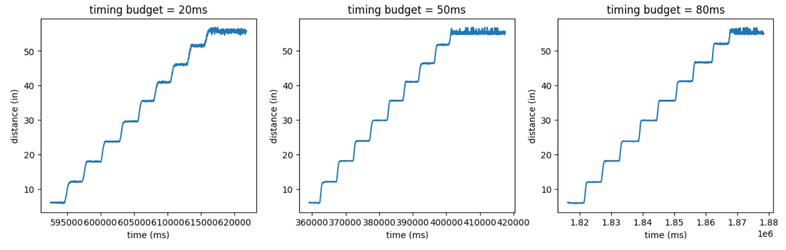

In this lab, I added time-of-flight sensors to the robot to measure distances from
obstacles. I focused on enhancing data sampling rate, precision, and accuracy, since
these factors enable faster driving.
accelerometer and gyroscope. Various filtering techniques are used to get clean, accurate signals.
In this lab, we also received the physical robot and performed stunts with it.
Prelab
I2C sensor address
The two sensors have the exact same default address, 0x29. To avoid duplicate sensor
issues at power-up, I soldered the X-SHUT pin of one of the sensors to pin 4, a digital
GPIO pin, on the Artemis.
Artemis scanning for I2C address
Sensor placement
Since the car will most likely be either driving forwards or cornering, it made sense to
put the ToF sensors on the front and side of the car. With this arrangement, the sensors
will miss obstacles that are behind or to the opposite side of the car. The wiring diagram,
along with a messy prototype, is shown below:
When wiring up the sensors, I used longer cables for the ToF sensors and a shorter one for the
IMU. Since the ToF sensors detect obstacles, I would like more flexibility in where I place them.
The IMU can detect the car’s absolute orientation regardless of how it’s placed.
Lab Tasks
Testing one ToF sensor
The ToF sensor can measure in short, medium or long modes. The ranges of each mode can be found in
table 4 of the datasheet, shown below:
Since the car will most likely be driven under ambient light, I decided to use the short mode.
Next, I tested the sensor’s measurement accuracy and precision at different distances and sampling
rates. The sampling rate for the ToF sensor is determined by its timing budget, or how long it takes
to make one measurement, or its range time, the time delay between each measurement. For this lab, I
kept the range time to 10ms and varied the timing budget.
I set up the following data collection scheme with my friend Rachel Arena:
The maximum range of the ToF’s short mode under ambient light is 1.3m, which is ~54”. To test the sensor's
full range, I collected 100 sensor measurements at each of 9 distances (from 6" to 54" in 6" increments).
I compared data for timing budgets of 20ms, 50ms, and 80ms. In Arduino, I collected data in a loop and sent
it to my laptop via BLE; in Python, I used a notification handler to store that data in lists, as done in previous labs.
My raw data is shown below:

I wrote a function in Python to extract the “flat” parts of my data, which correspond to the distance
measurements I want.
I the plotted the means and standard deviations of the measurements for each timing budget:
From the plots, we can see that the measurements become very imprecise (ie, high stdv) at
roughly the 35” mark. It is also interesting to note that a timing budget of 50ms seems to
yield the least accurate measurements. It seems that the timing budget of 80ms yields
the most accurate and precise results.
Testing two ToF sensors
Next, I used the same setup to collect data with both ToF sensors running in parallel.
The raw data, means, and standard deviations are shown below:
Raw dataMeans and standard deviations
Neither sensor seems very precise, especially after the 20" mark.
ToF sensor speed
To test the limits of the ToF sensor’s measurement speed, I implemented a speed-optimized
data collection loop in Arduino.
I tried a few different timing budgets and range times. In general, the limiting factor
of data collection speed is the sensor itself. As shown by the consecutive time printouts,
the loop is executing faster than the sensor can retrieve new measurements.
20ms timing budget, 10ms range time20ms timing budget, 50ms range time50ms timing budget, 10ms range time
ToF sensors and the IMU
To put Lab 2 and Lab 3 together, I ran both ToF sensors and the IMU in parallel to collect
distance and orientation data. I combined code from previous labs to implement a data collection loop:
I used a complementary filter when computing my pitch and roll angles, as this method seemed to yield
the cleanest results in Lab 2.
The real-time pitch, roll, yaw, and distance measurements can be seen in the video below:
Finally, I post-processed my data and plotted distances and angles over time for
my ToF and IMU sensor data:
Discussion and acknowledgements
Discussion
Lab 3 was very useful for characterizing the ToF sensors; the observations I made will
come in handy for future labs. It was also exciting to see everything in previous
labs come together, and see the robot be able to gather distance and orientation data.
Acknowledgements
I worked with Rachel Arena and Kelvin Resch on this lab. Rachel and I worked together to
collect data and sanity-check each other’s code. Kelvin showed me some cool soldering tricks.